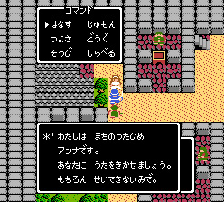
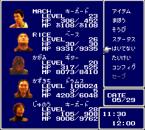

News
3rd LIVE予告音源を掲載しました
LIVE INFORMATION
- 日時: 2006年5月28日(日) 14:30-15:00
- 場所: 東京大学 本郷キャンパス 安田講堂前特設ステージ
SET LIST
1st LIVE
2nd LIVE
- ビッグブリッヂの死闘(FF5)
- Final Fantasy 戦闘メドレー
[戦闘シーン(FF1)/戦闘シーン1(FF2)/バトル1(FF3)/バトル1(FF4)/バトル1(FF5)/戦闘(FF6)/決戦(FF6)/更に闘う者たち(FF7)/天使の再誕(FF7)/勝利のファンファーレ(FF6)]
- Romancing SaGa 戦闘メドレー1 [決戦サルーイン!(RS1)/バトル1(RS2)/四魔貴族バトル2(RS3)/勝利!]
- Chrono Trigger
- Romancing SaGa 戦闘メドレー2 [俺たちゃ海賊(RSMS)/戦いの序曲(RSMS)/バトル1(RS1)/レクイエム]
3rd LIVE
MEMBER

LINK